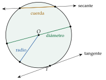
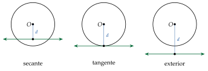
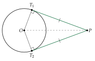
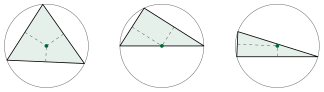
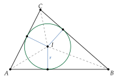
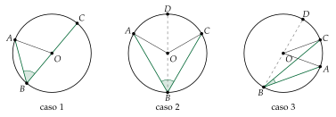
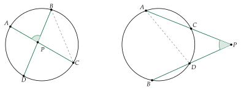

La circunferencia es la única curva que estudiamos en la geometría plana de este curso, y sin embargo es una fuente inagotable de teoremas. En este capítulo estudiamos cómo se relaciona con las rectas, cómo se miden sus arcos y los ángulos asociados a ellos, cuándo un cuadrilátero se puede inscribir en una circunferencia, cómo se cortan dos circunferencias, y terminamos calculando su longitud y el área del círculo por medio de polígonos regulares.
Sea O un punto de un plano y r>0. La circunferencia de centro O y radio r es el conjunto de los puntos del plano cuya distancia a O es r: C(O,r)={P:OP=r}. Los puntos con OP<r forman el interior de la circunferencia y los puntos con OP>r su exterior. La unión de la circunferencia y su interior es el círculo.
Un radio es un segmento que une el centro con un punto de la circunferencia (la palabra designa también su longitud r).
Una cuerda es un segmento que une dos puntos de la circunferencia. Un diámetro es una cuerda que pasa por el centro; mide 2r.
Una recta es secante si corta a la circunferencia en dos puntos, y tangente si la corta en exactamente uno, el punto de tangencia.
Un ángulo central es un ángulo con vértice en el centro.

Sean A y B dos puntos de la circunferencia C(O,r).
Si AB no es un diámetro, el arco menor AB⌢ está formado por A, B y los puntos de la circunferencia que están en el interior de ∠AOB; el arco mayor AXB⌢ por A, B y los puntos que están en el exterior de ese ángulo (se nombra con un tercer punto X del arco). Si AB es un diámetro, cada uno de los dos arcos es una semicircunferencia.
Un sector circular es la región limitada por dos radios y el arco comprendido entre ellos.
Un segmento circular es la región limitada por una cuerda y uno de los arcos que determina.
Una recta y una circunferencia se cortan a lo sumo en dos puntos.
Supongamos que la recta ℓ corta a C(O,r) en tres puntos distintos A, B, C.
Como OA=OB=OC=r, el punto O está en la mediatriz de AB y en la de BC (Teorema 3.8.1).
Si O∈/ℓ, esas mediatrices son dos rectas distintas perpendiculares a ℓ por O (son distintas porque pasan por los puntos medios distintos de AB y BC), contra la unicidad de la perpendicular desde un punto (Teorema 3.3.3).
Si O∈ℓ, los tres puntos estarían en ℓ a distancia r de O, pero en una recta solo hay dos puntos a distancia r de un punto dado (postulado de la regla).
Sea d la distancia del centro O a la recta ℓ. Entonces ℓ es secante si d<r, tangente si d=r y exterior (no la corta) si d>r.
Sea H el pie de la perpendicular desde O a ℓ, de modo que d=OH. Para P∈ℓ, por Pitágoras, OP2=d2+HP2.
Si d>r, OP≥d>r para todo P∈ℓ: ningún punto de ℓ está en la circunferencia.

Si d=r, OP=r si y solo si HP=0, es decir, P=H: hay exactamente un punto común.
Si d<r, los puntos P de ℓ con HP=r2−d2 cumplen OP=r, y hay exactamente dos (uno a cada lado de H, por el postulado de la regla).
Una recta ℓ que pasa por un punto T de la circunferencia C(O,r) es tangente a ella si y solo si es perpendicular al radio OT.
Si ℓ⊥OT, la distancia de O a ℓ es OT=r y ℓ es tangente (Teorema 7.2.2). Recíprocamente, si ℓ no es perpendicular a OT, el pie H de la perpendicular desde O es distinto de T, y d=OH<OT=r por el teorema de las oblicuas; la recta es secante.
Por un punto P exterior a una circunferencia se pueden trazar exactamente dos tangentes, y los segmentos tangentes PT1 y PT2 son congruentes. Además, PO es la bisectriz de ∠T1PT2.
Si PT es tangente en T, el triángulo △OTP es rectángulo en T, así que PT=OP2−r2 es el mismo para toda tangente. Los triángulos rectángulos △OT1P y △OT2P tienen la hipotenusa común y OT1=OT2; por hipotenusa-cateto son congruentes, de donde PT1=PT2 y ∠OPT1≅∠OPT2. (La existencia de los puntos de tangencia se verá en el ejemplo 7.5.4.)
Arrastre el punto exterior P: los dos segmentos tangentes miden lo mismo.

Por tres puntos no colineales pasa exactamente una circunferencia. Su centro es el punto donde concurren las mediatrices de los lados del triángulo que forman.
Sean A, B, C no colineales y m1, m2 las mediatrices de AB y BC.
Estas rectas se cortan: si fueran paralelas, como m1⊥AB, también AB sería perpendicular a m2 (Corolario 3.4.6), y AB y BC serían dos perpendiculares a m2 por B, es decir, la misma recta; pero A, B, C no son colineales.
Sea O el punto de corte.
Por la caracterización de la mediatriz, OA=OB y OB=OC; luego OA=OC y O está también en la mediatriz de AC.
La circunferencia de centro O y radio OA pasa por los tres puntos.
Unicidad: el centro de cualquier circunferencia que pase por A, B, C equidista de ellos, así que está en m1 y en m2, es decir, es O; y el radio es OA.
Arrastre los vértices. Las tres mediatrices se cortan en un punto que equidista de los vértices. ¿Cuándo queda fuera del triángulo?
El punto O del teorema anterior es el circuncentro del triángulo △ABC, la circunferencia es la circunscrita y su radio R es el circunradio. Se dice que el triángulo está inscrito en la circunferencia.

Las tres bisectrices de un triángulo concurren en un punto I, el incentro, que equidista de los tres lados. La circunferencia de centro I y radio igual a esa distancia (la circunferencia inscrita, de radio r, el inradio) es tangente a los tres lados.
Las bisectrices de ∠A y ∠B se cortan en un punto I interior al triángulo (la bisectriz de ∠A corta a BC en D por la barra transversal, y la bisectriz de ∠B corta a AD por la barra transversal aplicada a ∠ABD).
Por la caracterización de la bisectriz, I equidista de AB y AC, y de AB y BC; luego equidista de AC y BC y, como es interior a ∠C, está en su bisectriz.
Si r es esa distancia común, la circunferencia C(I,r) está a distancia r de cada lado, y por el Teorema 7.2.2 es tangente a cada uno; el punto de tangencia es el pie de la perpendicular desde I, que está en el lado.
Arrastre los vértices.
Si s es el semiperímetro de un triángulo y r su inradio, el área es A=rs.
El incentro divide al triángulo en △IBC, △ICA y △IAB, de bases a, b, c y altura común r. Sumando, A=2ra+2rb+2rc=r2a+b+c=rs.

La medida de un arco menor AB⌢ es la medida del ángulo central ∠AOB; la de una semicircunferencia es 180∘; y la de un arco mayor AXB⌢ es 360∘−mAB⌢.
Si C es un punto del arco ACB⌢, entonces mAC⌢+mCB⌢=mACB⌢.
(Para arcos menores esto es el postulado de adición de ángulos; el postulado lo extiende a arcos mayores.)
Dos circunferencias son congruentes si tienen radios iguales, y dos arcos son congruentes si están en la misma circunferencia o en circunferencias congruentes y tienen la misma medida.
En una circunferencia (o en circunferencias congruentes), para dos arcos menores AB⌢ y CD⌢ son equivalentes: (i) los ángulos centrales ∠AOB y ∠COD son congruentes; (ii) los arcos son congruentes; (iii) las cuerdas AB y CD son congruentes.
(i)⟺(ii) es la definición de medida de arco. (i)⇒(iii): los triángulos △AOB y △COD son congruentes por L-A-L (los radios son iguales). (iii)⇒(i): los mismos triángulos son congruentes por L-L-L.
Si un radio (o un diámetro) es perpendicular a una cuerda, la biseca y biseca también a su arco menor. Recíprocamente, el radio que pasa por el punto medio de una cuerda que no es diámetro es perpendicular a ella, y la mediatriz de cualquier cuerda pasa por el centro.
Sea AB una cuerda y OC un radio perpendicular a ella en M. El triángulo △OAB es isósceles y OM es su altura; por el Teorema 3.2.7 es también mediana y bisectriz: AM=MB y ∠AOC≅∠COB, así que AC⌢≅CB⌢. Los recíprocos salen del mismo teorema (o de la caracterización de la mediatriz: O equidista de A y de B).
En una circunferencia, dos cuerdas son congruentes si y solo si equidistan del centro. Además, de dos cuerdas no congruentes, la mayor es la más cercana al centro.
Si M es el punto medio de la cuerda AB, por el teorema anterior OM⊥AB, y por Pitágoras (2AB)2=r2−OM2. Así AB=2r2−d2, donde d=OM es la distancia de la cuerda al centro. Esta expresión es decreciente en d: cuerdas iguales corresponden a distancias iguales, y mayor cuerda a menor distancia.
Un ángulo es inscrito en una circunferencia si su vértice está en la circunferencia y sus lados la cortan en otros dos puntos. El arco que queda en el interior del ángulo (con sus extremos) es el arco interceptado o abarcado.
La medida de un ángulo inscrito es la mitad de la medida de su arco interceptado: m∠ABC=21mAC⌢.
Sea O el centro. Distinguimos tres casos según la posición de O respecto al ángulo.
Caso 1: O está en un lado, digamos en BC (así que BC es un diámetro). El triángulo △OAB es isósceles (OA=OB), luego ∠OAB≅∠OBA=∠ABC. El ángulo central ∠AOC es exterior a △OAB, así que m∠AOC=m∠OAB+m∠OBA=2m∠ABC. Como mAC⌢=m∠AOC, queda probado.
Caso 2: O está en el interior del ángulo. Trazamos el diámetro BD. Por el teorema de la barra transversal, D está en el arco AC⌢ y en el interior del ángulo. Por el caso 1, m∠ABD=21mAD⌢ y m∠DBC=21mDC⌢. Sumando (postulados de adición de ángulos y de arcos), m∠ABC=21mAC⌢.
Caso 3: O está en el exterior del ángulo. Con el mismo diámetro BD, ahora uno de los lados, digamos BA, está en el interior de ∠DBC, y se restan las igualdades: m∠ABC=m∠DBC−m∠DBA=21(mDC⌢−mDA⌢)=21mAC⌢.
Mueva A, B y P sobre la circunferencia: mientras P no cruce el arco AB, el ángulo inscrito no cambia y es la mitad del central.

Los ángulos inscritos que interceptan el mismo arco (o arcos congruentes) son congruentes.
Todo ángulo inscrito en una semicircunferencia es recto.
Recíprocamente, si ∠ACB es recto, C está en la circunferencia de diámetro AB.
(i) y (ii) son inmediatos: el arco de una semicircunferencia mide 180∘. (iii) Por el Corolario 4.3.3, el punto medio de la hipotenusa AB equidista de A, B y C.
Sea P exterior a C(O,r) y sea C′ la circunferencia de diámetro OP. Si T es un punto común a C y C′, el ángulo ∠OTP está inscrito en una semicircunferencia de C′, luego es recto, y PT es tangente a C en T (Teorema 7.2.3). Así se construyen con regla y compás las dos tangentes del Corolario 7.2.4. (Que C y C′ se cortan en dos puntos se sigue del Teorema 7.7.1.)
El ángulo formado por una cuerda y la tangente en uno de sus extremos (ángulo semi-inscrito) mide la mitad del arco que intercepta.
Sea TA una cuerda y TX un rayo de la tangente en T. Si TA es diámetro, el ángulo es recto y el arco es una semicircunferencia. Si no, sea TD el diámetro. Entonces m∠XTD=90∘=21mTAD⌢ (arco semicircunferencia), y ∠ATD es inscrito con m∠ATD=21mAD⌢. Sumando o restando según A esté o no en el interior de ∠XTD, se obtiene m∠XTA=21mTA⌢ (el arco interceptado).
Si dos cuerdas AC y BD se cortan en un punto P interior a la circunferencia, entonces m∠APB=21(mAB⌢+mCD⌢).
Si dos secantes (o tangentes) trazadas desde un punto exterior P interceptan los arcos AB⌢ (el lejano) y CD⌢ (el cercano), entonces m∠P=21(mAB⌢−mCD⌢).
(i) Trazamos BC. El ángulo ∠APB es exterior al triángulo △BPC, así que m∠APB=m∠ACB+m∠DBC=21mAB⌢+21mCD⌢.

(ii) Sean las secantes PA y PB con P−C−A y P−D−B. Trazamos AD. El ángulo ∠ADB es exterior a △PAD: m∠ADB=m∠P+m∠PAD, es decir, m∠P=21mAB⌢−21mCD⌢. Si uno de los lados es tangente, se usa el ángulo semi-inscrito en lugar del inscrito.
Próxima semana: Cuadriláteros cíclicos y el número π